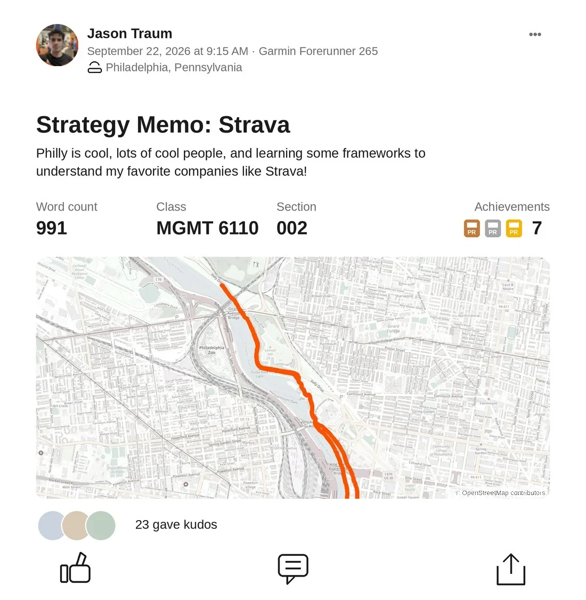
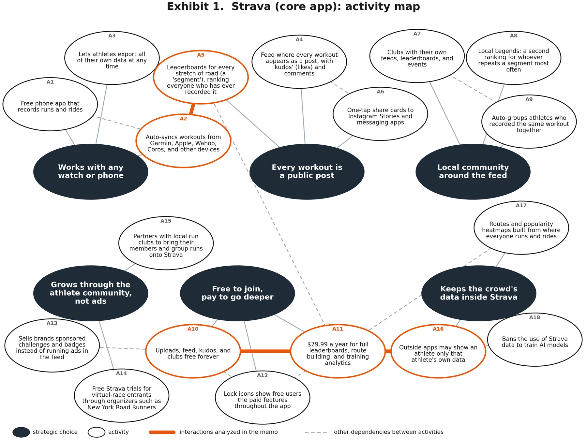

Strava strategy memo
A fitness app with almost no technology advantage, worth billions because it is the only place a workout counts in front of other people.

Summary. Strava's software is easy to copy, and most of it has been: phones record GPS, and Garmin gives away segments and heatmaps. Nobody has copied the crowd, more than 200 million athletes ranked against each other whatever watch they wear. Device neutrality is the moat, because Garmin and Apple build software to sell their own hardware. It also caps Strava's leverage: Garmin controls where the data is created and is building Strava's social layer into its own app. Strava is profitable today, but holding on to its share of the value gets harder each year, and its bet on coaching apps lands in the layer being commoditized fastest.
Industry Analysis: profitable today, harder each year
The industry is US apps that let amateur runners and cyclists record, share, and compare workouts, analyzed as of mid-2026.
Starting from the need rather than the product matters here. Defined by product, Strava competes with fitness-tracking apps. Defined by need, it competes with anything athletes would use to make a workout useful or make it count with other people. The test for membership is whether a player can capture what athletes will pay for that. Garmin, the largest maker of GPS sports watches, passes because its Connect app is building the same social layer; Instagram sits at the boundary as a substitute, offering the audience without the data. Strava's position is to serve the need across every brand of hardware, and that hardware neutrality is Strava's strategic choice, not the boundary of the industry.
Figure 1. Athletes are the one force working for Strava, and Garmin shows up on two sides of it
Customers
Athletes, who also make the content
Positive, with a price ceiling
Competitors
Garmin Connect, Instagram
Negative
Strava
More than 200 million users, every device brand
Positive but narrowing
Complementors
Garmin, Apple, Coros, Wahoo
Negative and worsening
Suppliers
Athletes again, paid in control instead of cash, plus map data, cloud hosting and app stores
Negative but small
Company: Strava
Strava is a free app, with a paid tier, that records a run or bike ride from a phone or GPS watch and posts it to a feed that friends follow, the way Instagram posts a photo. Each post shows the route on a map, the pace and distance, and any photos taken along the way. Followers respond with kudos, Strava's word for a like. The app also cuts every popular road and trail into segments, short stretches with a public leaderboard of everyone who has ever recorded them; the fastest man and woman on each are crowned KOM and QOM, king and queen of the mountain. Clubs are groups inside the app, usually a local running or cycling club, with their own feed and events. Strava was founded in 2009, is based in San Francisco, and had more than 200 million users by mid-2026.
Strava creates value by putting athletes into one social network no matter what watch, bike computer, or phone they record with. Some users treat it as a logbook: upload the run, glance at pace and distance, close the app. For most, it is closer to Instagram than to a training tool: the feed, kudos, followers, and segment leaderboards turn a solo workout into something friends see and strangers rank, and the workout is the post. What sets the product apart is the audience, not the software. Little of what Strava's software does is hard or unique. GPS recording is built into every phone; Garmin Connect, the free app that comes with every Garmin watch, has offered segments and heatmaps (maps shaded by where athletes go most) for years; and Strava shut down FATMAP, a 3D outdoor mapping app it bought in 2023, about 18 months after buying it. What Strava has that no rival has is the crowd: more than 200 million users, a million clubs, and leaderboards that rank everyone who has run or ridden a given stretch of road. Among people who run and want any social element to it, Strava is the default. Other apps get used alongside it, not instead of it.
Strava sells a signal. The subscription buys little functionality that Garmin does not give away, but a leaderboard rank and a feed post are visible to everyone the athlete wants to impress. The need underneath is to feel rewarded for doing something hard and healthy, and Strava's rise coincided with running and cycling becoming mainstream social activities rather than solitary ones, so timing did much of the work. That is what raises willingness to pay, and it changes what athletes do, the same way Instagram changed where people go on vacation. People pick routes that look good on a map, push harder on stretches they know are ranked, and stop mid-run to take a photo, because the workout will be seen. On Instagram the content is the trip or the dinner; on Strava it is the run, with the travel and social plans attached to it. A 2017 study in Nature Communications found causal evidence of the same effect across roughly 1.1 million runners on a global running network: when friends run more, people run more. Strava does not have to analyze training better than Garmin does. It has to be the place where the effort counts for something.
The cost side is where the margin comes from. Strava's key input, activity data, is supplied by athletes who are not paid for it, since they would record the run anyway, and device partners deliver it at their own expense. Strava carries real fixed costs in engineering, hosting, and integrations, but its marginal cost of acquiring the content that powers the network is close to zero, which is what makes the gap between what athletes will pay and what the inputs cost so wide.
Added value, what disappears without Strava, is a narrower question. Take Strava out of the market and athletes still have recording hardware, basic analytics, coaching plans, and AI analysis. What they lose is the one network that spans every brand, and the leaderboards and routes that are complete because of it. This is Facebook's kind of added value: not the software, which anyone can build, but the fact that everyone is already there and checks it out of habit. That is the core of Strava's added value, and it shrinks every time a competitor gets closer to it. Garmin already copied segments and heatmaps, and in May 2026 it began rolling out a follower model in Connect. Strava cannot capture more than it adds, and its next best alternative keeps improving. Strava's response has been to invest in the part of the product that is not its added value. In 2025 it bought Runna, an app that generates a personalized training plan from an athlete's goal race and current fitness, and The Breakaway, the cycling equivalent. It launched Athlete Intelligence, an AI feature whose summaries largely restate numbers already on screen, and opened an AI connector for subscribers. These moves diversify revenue and give the subscription more to point to, but they do not change why athletes open the app. The tech is a commodity; the network is not.
Strava captures value in three ways. It grows the pie by raising willingness to pay (kudos, ranks, and the convenience of syncing from any device) while paying nothing for its main input. It improves its bargaining position by fragmenting the device makers (it supports all of them and runs its own phone recorder) and by manufacturing scarcity (no rival's leaderboard is as complete). And it shrinks competitors' pie: since 2020 it has limited what outside apps can do with Strava data, which lowers willingness to pay for them, and since 2024 it has banned using that data to train AI models, which raises rivals' input costs. The money comes in at $79.99 a year, or $149.99 bundled with Runna coaching plans, plus sponsored challenges for brands, which started at $20,000 in 2024, with no programmatic ads. Revenue is reportedly under $500 million, growing about 50% a year and profitable, according to The Information. Strava announced in February 2026 that it had confidentially submitted a draft IPO filing; as of early October 2026 it had not filed publicly.
Effect on attractiveness: positive but narrowing. Strava creates a lot of value at very low marginal content cost, but most of its added value sits in a cross-device network that device makers are now trying to replicate.
Customers
Athletes are the main customer group, and they build the product they pay for. Every upload adds a post to the feed, an entry to a leaderboard, and a line to the heatmaps behind route suggestions. Strava logged 14 billion kudos in 2025, and clubs nearly quadrupled to a million. None of that costs Strava anything. It then competes for those users' money with a subscription tier holding the features they created the raw material for.
Individual customers have little leverage, and switching is technically easy but socially costly: workout data is portable, since Strava lets users download everything and most watches sync to several apps at once, but followers, clubs, and years of segment history do not travel. What constrains Strava is aggregate willingness to pay, and the 2023 price test showed where it sits. Raising the annual price from $59.99 to $79.99 was the first increase for all-access subscribers since Strava launched, drew enough backlash that Strava apologized for the rollout, and has not been repeated. Since then Strava has raised the effective price without touching the list price, by moving features behind the existing paywall and bundling Runna at $149.99. The paywall is aggressive by design. A free user runs into locked features constantly (full leaderboards, route building, most of the analytics), and the friction itself converts; plenty of subscribers signed up mainly to make the lock icons go away. Strava also seeds subscriptions through the running community rather than through advertising. New York Road Runners, the nonprofit that organizes the New York City Marathon, runs its virtual races on Strava and gives registrants a free 30- to 60-day Strava trial, and Strava sponsors athlete ambassadors and creators. The point is to be the app someone new to running installs first, before they have tried anything else.
Figure 2. After the 2023 backlash, Strava raised its price through bundles instead of the list price
Brands are the second group. They pay to reach active, affluent people through sponsored challenges and segments, which Strava can promote in the feed, and Strava has kept programmatic ads off the platform. Starbucks and Hoka both ran campaigns in 2026. City planners are the third. More than 4,500 planners and agencies have used Strava Metro, a free dataset of anonymized trips, which buys regulatory goodwill rather than revenue.
Effect on attractiveness: positive, with a price ceiling. Customers supply the content free and convert through the paywall and community trials, but portable data and the failed second price increase cap what the industry can extract from them.
Suppliers
The supplier that matters is the user base, which sits on two sides of the Value Net at once, as customer and as supplier. Athletes supply the raw data behind segments, heatmaps, route recommendations, and Metro, and they are not paid for it in cash. What they demand instead is control: privacy zones around their homes, the right to export everything, and a ban on their data being used to train AI models, all of which Strava has granted. Their willingness to sell is low, not zero. A new route was created on Strava every 19 seconds in 2025, all of it from activity the company neither paid for nor recorded itself. Device makers deliver that data, so they are suppliers in a narrow sense, but their power is better analyzed as complementors below.
Beneath the athletes sit two commodity suppliers: map data under the routes and heatmaps, and cloud hosting under the feed and leaderboards. Both come from competitive markets where Strava can switch vendors, so neither can raise prices much. App stores are the one real tax: Apple takes 15 to 30% of subscriptions bought inside an iPhone app. US courts have been dismantling it. A 2025 ruling barred Apple from charging any commission on purchases made through external links. An appeals court later let Apple seek a cost-based fee instead, and the Supreme Court agreed in June 2026 to review the contempt finding; until those are settled, link-out purchases carry no commission. Strava already sells subscriptions, including the Runna bundle, on its own website.
Effect on attractiveness: negative but small. App store fees still apply to in-app purchases, but they are shrinking in the US and the most important input costs nothing.
Complementors
Device makers are the most important complementors, and the most dangerous. Garmin, Apple, and the smaller specialists Wahoo and Coros build the watches and bike computers that record workouts; Strava builds none. Strava is their complementor, not their supplier: it makes a watch more valuable the way apps make a phone more valuable, but no watch needs Strava to work. Coaching and analytics apps, and now AI assistants, add analysis on top of Strava data. The network effects run in both directions: more devices and apps make Strava worth joining, and more athletes make Strava worth connecting to. Each complementor also wants a share of what it helps create.
Strava has handled this the way Nintendo handled game developers: by governing its complementors and capping how much value they can capture. In 2020 it cut leaderboard data from its API for non-subscribers. In November 2024 it barred outside apps from showing an athlete's data to anyone else, which hit coaching platforms, and banned using API data to train AI models. In June 2026 it required a paid subscription for standard API access and removed several endpoints, including club data. The reason Strava gave is the standard problem of an ungoverned platform: developer applications up 448% in a year, with zero-code AI apps and scrapers degrading performance for everyone. At the same time it seeded its own first-party complements, buying Runna and The Breakaway in 2025 and launching a subscriber-only AI connector in June 2026.
Each round shifted value toward Strava and shrank what the ecosystem could build, and developers responded by routing around it. Runalyze, an analytics site, told users they would get more data by connecting their devices directly, and Intervals.icu, a training-analysis tool, began building a path that skips Strava entirely.
The complementor Strava cannot cap is Garmin, because Garmin owns the point where the data is created. The two are now playing the same game against each other: each is trying to commoditize its complement. Strava wants the watch to be interchangeable, so it accepts every device and runs its own phone recorder, which makes the hardware a commodity and the network the scarce input. Garmin wants the social layer to be interchangeable, so it has built segments, heatmaps, and, since May 2026, a follower model into Connect, which would make the network a commodity and the sensors the scarce input. That makes Garmin a competitor as well as a complementor. Whoever succeeds sharply reduces the other's added value. This is also the Netflix problem in reverse: the studios that supplied Netflix's content learned they could go direct, and Garmin can do the same with the data it feeds to Strava. In July 2025 Garmin told developers they must credit Garmin on any data from its devices, with a November deadline. Strava sued over its segment and heatmap patents on September 30, dismissed the case 21 days later before Garmin had responded, and now labels the data source on every activity. Ray Maker, the fitness-tech reviewer behind DC Rainmaker, told Escape Collective, a cycling news outlet, that if Garmin cut the connection, Strava would go out of business "in a matter of days." In 2026 Garmin paused new applications to its developer program, and in July it bought TrainingPeaks and TrainHeroic, two widely used coaching platforms.
Figure 3. Six years of Strava and Garmin moving against each other over the same athletes’ data
- May 2020StravaPuts full leaderboards behind the paywall and cuts leaderboard data from its API for about 44,000 outside apps the same day.
- 2023StravaRaises the annual price from $59.99 to $79.99, its first increase, and apologizes for the rollout.
- Nov 2024StravaOutside apps may show an athlete only their own data. No training AI models on Strava data.
- Mar 2025GarminLaunches Connect+ at $69.99 a year, $10 below Strava.
- 2025StravaBuys Runna and The Breakaway, two coaching apps.
- Jul 2025GarminTells developers to credit Garmin on any data from its devices, with a November deadline.
- Sep 30, 2025StravaSues Garmin over its segment and heatmap patents, then drops the case 21 days later.
- Feb 2026StravaConfidentially submits a draft IPO filing.
- 2026GarminPauses new applications to its developer program.
- May 2026GarminStarts rolling out a follower model in Connect, the one piece it was missing.
- Jun 2026StravaRequires a paid subscription for standard API access and launches a subscriber-only AI connector.
- Jul 2026GarminBuys TrainingPeaks and TrainHeroic, two widely used coaching platforms.
That leverage has a ceiling, though, and the ceiling comes from how many alternatives to Garmin exist. Apple sells more smartwatches than any other company; Coros, Polar, and Suunto compete with Garmin for serious runners; Wahoo competes for cyclists; and all of them sync to Strava. Because Strava treats every device the same, it sits as the aggregator over a fragmented set of suppliers. No single maker's decision breaks the network, and any maker that cut the connection would hand its own customers a reason to buy the other brand, which is why the smaller makers list Strava sync as a selling point, and why Samsung agreed in July 2026 to pre-install Strava on its new Galaxy watches. Strava built its brand with athletes rather than with device makers, so the demand for the sync comes from Garmin's own customers, and cutting it would cost Garmin goodwill with the people who buy its watches. Strava also has a direct recording channel: 72% of users recorded workouts directly through its mobile app in 2025, which reduces, without removing, its dependence on device makers.
Effect on attractiveness: negative and worsening. Fragmentation among device makers gives Strava the upper hand over any one of them, but Garmin is large enough to set terms anyway, and the complementors that control the data are now buying the coaching layer.
Competitors
Because the industry is defined by the need, substitutes and competitors are the same players, and the strongest of them are the companies Strava depends on. Garmin Connect gives Garmin owners segments, heatmaps, and deeper physiological metrics free, because Garmin owns the sensors. Its paid tier, Connect+, launched in March 2025 at $69.99 a year with AI insights, $10 below Strava. In May 2026 Garmin began rolling out a Strava-style follower model in Connect, the one piece it had been missing. Apple's watchOS 26 added Workout Buddy, an AI voice coach. Both are becoming more similar to Strava, and similarity is what cuts added value fastest.
The analysis layer has also been commoditized. AI training plans were already common by 2025, and connectors from smaller apps such as Tredict let AI assistants read device data without any Strava subscription. Route-planning apps such as Komoot and AllTrails take the navigation use case, though Komoot lost most of its staff after its 2025 sale. The competitor for the part of the need that actually drives usage is Instagram, along with TikTok. Both offer the same currency, attention from friends and strangers, to a far larger audience, and both already carry a large share of running content. What they lack is the workout data that makes the post credible and the leaderboard that makes it competitive. Strava sits between the two: too thin on analysis to be Garmin, too narrow in audience to be Instagram, and valuable because it is the only feed where the number on the post is verified.
Effect on attractiveness: negative. Every feature Strava charges for exists elsewhere, often free. What no competitor has is athletes from every hardware brand ranked against each other, and Garmin is now building toward exactly that.
Overall attractiveness
Netting the components, the industry is profitable for Strava today and getting harder each year. The positives sit on the company and customer side and they are large: the content is free, the marginal cost of serving another user is close to zero, and the subscription still has room to grow because the paywall converts. The negatives sit on the complementor and competitor side and they are about direction rather than level: Garmin is moving up into Strava's layer, and every analytics feature is being copied. Where the margins sit shows how the value is split today. Garmin's fitness segment earned $2.36 billion in 2025 revenue at a 31% operating margin, several times Strava's total revenue, while monetizing many of the same athletes. Garmin has hardware economics Strava chose not to have, so the comparison does not settle the question on its own, but it shows that the complementor with the sensors has the means to take more of the surplus, from the hardware and, increasingly, from the software layered on top.
Figure 4. Garmin’s fitness segment makes several times Strava’s revenue from many of the same athletes
Two further lessons apply. This is a fluid industry whose forces are not settled, the kind that grows fast without being profitable for everyone in it: Strava's revenue is growing around 50% a year while its added value is being copied. And industry structure is made, not born. Strava's prospects rest on staying the one place every device feeds. Its API restrictions raise revenue now and push developers toward device makers, and Garmin is using that opening to build the social and coaching layers itself.
The crowd may also be worth more than the subscription monetizes. The social graph and years of segment history are an asset in their own right, and running is becoming more of a public, social activity, which makes that asset more valuable each year. That is the kind of asset a device maker might want to own, even though owning Strava would end the neutrality that makes it worth owning.
Activity Map and Interactions: defended against apps, exposed to Garmin
The map covers the Strava app only. Runna and The Breakaway run as separate businesses and are out of scope, except where Runna plans are sold inside the Strava subscription. Dark bubbles are the six choices that define Strava's position; light bubbles are the eighteen day-to-day activities that deliver them, three per choice. Lines between activities mark where one depends on or strengthens another, and the three discussed below are highlighted.


On a phone, pinch to zoom the map. Every activity is also listed below.
| # | Activity, grouped by strategic choice |
|---|---|
| Works with any watch or phone | |
| A1 | Free phone app that records runs and rides |
| A2 | Auto-syncs workouts from Garmin, Apple, Wahoo, Coros, and other devices |
| A3 | Lets athletes export all of their own data at any time |
| Every workout is a public post | |
| A4 | Feed where every workout appears as a post, with 'kudos' (likes) and comments |
| A5 | Leaderboards for every stretch of road (a 'segment'), ranking everyone who has ever recorded it |
| A6 | One-tap share cards to Instagram Stories and messaging apps |
| Local community around the feed | |
| A7 | Clubs with their own feeds, leaderboards, and events |
| A8 | Local Legends: a second ranking for whoever repeats a segment most often |
| A9 | Auto-groups athletes who recorded the same workout together |
| Free to join, pay to go deeper | |
| A10 | Uploads, feed, kudos, and clubs free forever |
| A11 | $79.99 a year for full leaderboards, route building, and training analytics |
| A12 | Lock icons show free users the paid features throughout the app |
| Grows through the athlete community, not ads | |
| A13 | Sells brands sponsored challenges and badges instead of running ads in the feed |
| A14 | Free Strava trials for virtual-race entrants through organizers such as New York Road Runners |
| A15 | Partners with local run clubs to bring their members and group runs onto Strava |
| Keeps the crowd's data inside Strava | |
| A16 | Outside apps may show an athlete only that athlete's own data |
| A17 | Routes and popularity heatmaps built from where everyone runs and rides |
| A18 | Bans the use of Strava data to train AI models |
Discussion of Activity Interactions
Each pair is analyzed in both directions, then classified by the type of fit: consistent (the activities do not contradict each other), reinforcing (each makes the other more valuable), or optimization of effort (investing in one saves money in the other).
A2 and A5: accepting uploads from any device, and ranking athletes on segments
- How A2 affects A5. A leaderboard is only a competition if everyone who ran the road is on it. Accepting data from every watch and bike computer is what makes Strava's ranking the complete one, and it is why a Garmin-only leaderboard carries less weight even among Garmin owners.
- How A5 affects A2. Segments give owners of any device a reason to sync to Strava after every workout. In 2020, while cutting other apps off, Strava deliberately kept live segments working on Garmin and Wahoo bike computers, putting its own competition onto competitors' hardware. Demand for the sync comes from the device makers' own customers, so the device makers provide it.
- Type of fit. Reinforcing. This pair is also the most protected, because copying it requires a trade-off rivals will not make: Garmin can build segments, and has, but only for Garmin owners.
A11 and A16: charging for depth, and limiting outside apps to each athlete's own data
- How A11 affects A16. The paywall sets the API's scope: whatever moves behind the subscription has to leave the API, or outside apps would give it away. When Strava moved full leaderboards and route building behind the subscription in May 2020, it cut leaderboard data from its API for about 44,000 third-party apps on the same day, keeping an exception for live segments on Garmin and Wahoo computers. The 2024 rule barring apps from showing an athlete's data to anyone else extended the same logic to the social layer.
- How A16 affects A11. With the API limited, outside apps became add-ons for people who already pay Strava rather than free alternatives to paying. VeloViewer, a popular analytics site, told its users it could not offer subscription features to non-subscribers without risking its API access, and noted that over 70% of its own paying users already subscribed to Strava. The restrictions turn potential substitutes into a reason to subscribe: they lower athletes' willingness to pay for a rival's version of the paid features.
- Type of fit. Reinforcing. The paywall decides what the API withholds, and the closed API protects the paywall. Both are also consistent with the choice not to run feed ads, since the subscription is the monetization. The cost is developer trust, which shows up in apps building direct connections to device makers instead.
A10 and A11: keeping the social core free, and charging for depth
- How A10 affects A11. The free tier is what makes the paid tier worth buying. Because uploads, the feed, kudos, and clubs cost nothing, everyone joins, and everyone joining is what makes the paid leaderboards complete, the route heatmaps dense, and the training comparisons meaningful. A paid feature built on a network of subscribers only would be thin. Free users are not a cost waiting to be converted; they are the raw material of the product the subscribers pay for.
- How A11 affects A10. The subscription is what pays for a free tier without advertising. Hosting 200 million users costs real money and most of them never pay, so the $79.99 tier funds the free core, and the choice to monetize through depth rather than through ads is what keeps the feed clean enough that people keep posting to it. The lock icons (A12) sit at the seam: they show free users what depth looks like without taking anything away from the social core.
- Type of fit. Reinforcing. The free tier grows the network that makes paid features valuable; paid revenue keeps the free tier free and ad-free. It is also the pair most exposed if Garmin gives the paid features away, because the free core cannot be made any freer.
Productive tensions
Two pairs pull against each other, and the distinction matters: these are tensions the strategy accepts, not weak fit. A trade-off that costs Strava something is also what makes the position hard for a rival to copy. A2 accepts data from every device while A16 restricts what leaves, so Strava is open on the supply side and closed on the demand side, and Garmin's attribution rules and developer-program pause were the response. A1, Strava's own phone recorder, competes with the device partners that A2 depends on. Both tensions are manageable while athletes prefer Strava's network to any single device maker's, and both become expensive if that changes.
Defensibility
Strava's moat is the same kind Facebook and Instagram have. The technology stopped being novel years ago; most features on the map have been copied, often for free, and the copies have not moved athletes. The value sits in who is already on the network and in the habit of posting to it, and neither can be copied. An athlete who moves to Garmin Connect's social layer keeps their data and loses everything else: followers, clubs, years of segment history, and the audience the workout was for. Switching is free in data terms and expensive in every term that counts, which is why a competitor with better software (Garmin has it) has not taken the social use case, just as better-built rivals never took Facebook's. So Strava's position is well defended against other apps and badly exposed to the companies that supply its data, and the reason is the same in both cases: the network is the asset that matters. Defensibility comes from fit and from trade-offs that make a position hard to replicate, and trade-offs mean choices about what not to do. Strava has made those choices: no hardware, no feed ads, no favored device. What resists copying is the combination: a network open to every device, leaderboards that are complete because of it, clubs that make the network local, and a paywall that holds because outside apps cannot rebuild the paid features. Garmin and Apple can copy every feature but not the first. Device neutrality is the trade-off they will not make, because their software exists to sell their hardware, and a neutral Garmin Connect would help Coros sell watches.
The trade-offs cut both ways. No hardware means no sensor data, so Garmin will keep the deeper physiological metrics. No feed ads caps what Strava earns from the large majority of users who never pay. Device neutrality means Strava cannot punish Garmin without hurting its own users, which is why the lawsuit lasted 21 days. Strava's API moves took value directly out of Garmin's ecosystem, and Garmin responded with attribution rules, a pause on new developers, and two coaching acquisitions. With followers now live in Connect, Garmin is moving into the social layer that is Strava's last unique asset. Strava's hedges are its own phone recorder, brand revenue that does not depend on any device maker, and the training apps it bought in 2025.
What keeps the position intact is not technology, which is replicable and in places behind what competitors give away. It is what keeps Instagram intact after every filter has been copied: the people are already there, and checking is a habit. Athletes treat Strava as the place where a workout counts, and that belief is the moat. My take: the moat is the crowd, not the code. It holds as long as the crowd stays, and Strava does not own the crowd.
Written for MGMT 6110 (Managing the Established Enterprise) at Wharton, Fall 2026. The industry analysis uses the Value Net; the activity map and fit analysis follow Porter’s activity-system approach. Analysis as of mid-2026; facts checked October 2026. Exhibit 1 updated in October 2026 to correct activity A14.